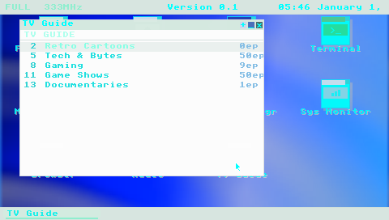
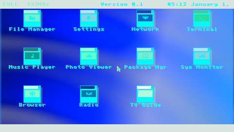
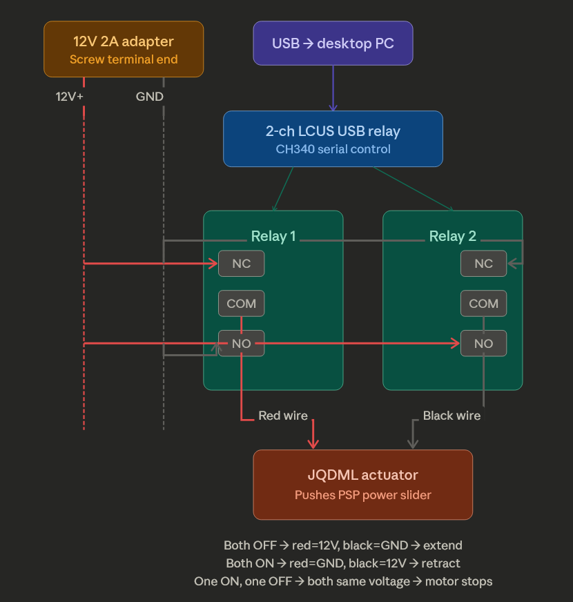
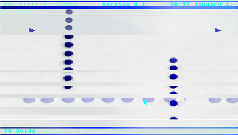

The Problem: Manual Testing Doesn’t Scale
Developing for the PSP is an exercise in physical logistics. Every test cycle requires walking to the device, plugging in USB, copying the EBOOT, ejecting, launching the app, connecting to WiFi through a dialog, reproducing the bug, reading logs via USB again, and repeating. Each iteration takes 3–5 minutes of human time, most of it waiting. When you’re chasing a firmware deadlock that manifests after 70 decoded video frames (Entry 07), that adds up fast.
We needed to close the loop — remove the human from the iterative cycle entirely. Build the EBOOT on the host, deploy it to the PSP over WiFi, reboot the device, wait for it to come back online, navigate the UI remotely, capture the screen, and read logs — all from a script or an AI agent. No walking to the desk. No plugging in cables. No pressing buttons.
Layer 1: WiFi Auto-Connect
The PSP’s WiFi stack doesn’t connect automatically on boot.
Normally, psp::net::connect_dialog() shows a system dialog that
renders via the GU — which blocks the main thread and corrupts the
display list if called at the wrong time.
We added a background thread (cmd_srv, priority 40) that spawns
during EBOOT init. It waits 5 seconds for the WLAN hardware to initialize
after a cold boot, then calls sceNetApctlConnect on saved WiFi
profiles (trying profile 1 then 0) without any dialog. If the first attempt
fails, it retries once more after the main loop has had time to settle.
Key discovery: psp::net::is_connected() uses an internal
flag that doesn’t reflect the actual apctl state. We had to
check sceNetApctlGetState directly to get reliable connection
status. The is_connected() flag is only set by
psp::net::init(), not by raw sceNetApctlConnect calls.
This same mismatch caused a GU corruption bug when the TV Guide app launched:
it checked is_connected(), got false (despite WiFi
being up), called ensure_net_init() which returned immediately,
then called reinit_gu_frame() — a function that is only safe
after GU utility dialogs. The fix: check sceNetApctlGetState
everywhere, not just in the server thread.
Layer 2: TCP Command Server
Once WiFi is up, the background thread starts a TCP server on port 9293.
The protocol is intentionally simple: one text command per connection,
one response, close. This makes it trivially scriptable with nc
(netcat):
$ echo "ping" | nc -w 3 192.168.0.249 9293
pongThe full command set:
| Command | Response | Description |
|---|---|---|
ping | pong\n | Connectivity check |
status | JSON | Kiosk app, free memory, frame count, audio-only flag |
log | text | Last 2KB of eboot.log |
logfull | text | Last 8KB of eboot.log |
screencap | raw pixels | 480×272 ABGR framebuffer stream |
screenshot | ok\n | Save VRAM to ms0: |
press <button> | ok\n | Inject button press+release |
hold <button> <ms> | ok\n | Hold button for N milliseconds |
cursor <x> <y> | ok\n | Move cursor to absolute position |
deploy <size> | ok\n | Receive EBOOT binary over TCP |
upload <size> <path> | ok\n | Write any file to ms0: over TCP |
reboot | ok\n | Cold hardware reset via scePowerRequestColdReset |
exit | ok\n | Exit to XMB |
audio-only [on|off] | status | Toggle or set video decode bypass |
video-limit <N> | status | Set max video frames for >480p content |
Layer 3: Remote Deploy + Arbitrary File Upload
The deploy command receives a raw EBOOT binary over the TCP
connection. The protocol is minimal: send deploy <size>\n
followed by exactly <size> bytes of EBOOT data. The server
writes to a temp file first, then renames over the live EBOOT (atomic-ish on
FAT32). This avoids corruption if the transfer is interrupted.
The upload command generalizes this to any file path on the Memory
Stick. This is critical for updating kernel PRX plugins without USB access:
# Deploy a new EBOOT
$ SIZE=$(stat -c%s "EBOOT.PBP")
$ (echo "deploy $SIZE"; cat "EBOOT.PBP") | nc -w 30 192.168.0.249 9293
ok
# Upload a kernel PRX plugin update
$ SIZE=$(stat -c%s "oasis.prx")
$ (echo "upload $SIZE ms0:/seplugins/oasis.prx"; cat "oasis.prx") | nc -w 30 192.168.0.249 9293
ok
After deploy, reboot triggers
scePowerRequestColdReset(0) — a full hardware reboot that
reloads all firmware modules, CFW plugins, and the AutoStart EBOOT.
This is not sceKernelLoadExec (which only restarts the app) —
it’s a real power cycle. The PSP shuts down, reboots, CFW initializes,
AutoStart launches OASIS OS, WiFi auto-connects, and the TCP server comes
back online. Total time: ~20 seconds.
$ echo "reboot" | nc -w 3 192.168.0.249 9293
ok
$ sleep 20
$ echo "ping" | nc -w 3 192.168.0.249 9293
pongLayer 4: Remote UI Control
Button presses are injected through a lock-free
SpscQueue<InputEvent, 32> shared between the TCP server
thread and the main loop. Each frame, poll_events_inner() drains
the queue alongside real controller input. From the main loop’s
perspective, injected events are indistinguishable from physical button presses.
The cursor command sets absolute cursor position, which is critical
for the PSP’s cursor-based dashboard — icon clicks use hit-testing
at the cursor position, not d-pad grid navigation. Injected
CursorMove events update the backend’s internal
cursor_x/cursor_y so that subsequent
ButtonPress(Confirm) events hit-test at the right coordinates.
With this, we can script complete UI workflows:
# Navigate to TV Guide (icon at row 2, col 2)
echo "cursor 290 200" | nc -w 3 192.168.0.249 9293
sleep 0.3
echo "press cross" | nc -w 3 192.168.0.249 9293
# Wait for it to load, then toggle windowed mode
sleep 5
echo "press start" | nc -w 3 192.168.0.249 9293Layer 5: Live Framebuffer Streaming
The screencap command reads the PSP’s VRAM directly at
0x44000000 (uncached framebuffer base), crops from the 512-pixel
stride to 480 visible pixels per row, and streams the raw ABGR pixel data
over TCP with a simple header (480 272\n).
On the host side, a one-liner converts this to a viewable PNG:
$ echo "screencap" | nc -w 5 192.168.0.249 9293 > /tmp/psp.raw
$ tail -c +9 /tmp/psp.raw | ffmpeg -y -f rawvideo \
-pixel_format abgr -video_size 480x272 \
-i - -update 1 /tmp/psp.png
screencap TCP command and converted to PNG with ffmpeg.
Layer 6: Physical Hard Reset (The Last Mile)
Software reboot handles the normal case. But the PSP’s firmware occasionally hard-locks — the ME deadlock from Entry 07, GU command buffer corruption, or OOM crashes that hang the kernel. When this happens, the TCP server is unreachable and the only recovery is a physical power cycle: hold the power slider for several seconds.
The PSP has no Wake-on-LAN, no IPMI, no remote management interface. The power switch is a physical slider on the side of the device. To close the automation loop completely, we designed a hardware solution: a 12V linear actuator controlled by a USB relay module, driven by a Python script on the development PC.
How It Works
A small linear actuator (10mm stroke, 188N force) pushes the PSP’s power slider. A 2-channel USB relay module (LCUS-2 with CH340 serial chip) is wired as an H-bridge to control the actuator’s direction:
- Both relays OFF → actuator extends (pushes slider)
- Both relays ON → actuator retracts (releases slider)
- One ON, one OFF → motor stopped (both wires at same voltage)

The Python control script sends serial commands to the relay module:
$ python psp_actuator.py on
--- PSP POWER ON SEQUENCE ---
Extending (pushing slider)...
Holding for 30 seconds...
Retracting (releasing slider)...
Stopped.
Done! PSP should be on.Parts List
| Part | Approx. Price |
|---|---|
| 12V mini linear actuator (10mm stroke) | ~$15 |
| 2-channel USB relay module (LCUS-2, CH340) | ~$12 |
| 12V 2A DC power adapter | ~$8 |
| Wago 221 lever connectors | ~$8–10 |
| 22 AWG hookup wire | ~$6 |
| Wire stripper | ~$10–15 |
Total cost: ~$55–65, all off-the-shelf, no soldering required.
Layer 7: Network Recovery (The Safety Net)
The actuator handles hard locks, but there’s a worse scenario: a bad EBOOT that crashes on boot. If the main application won’t start, the TCP server never comes up, and there’s no way to deploy a fix — even the actuator just power-cycles into the same crash.
ARK-4 CFW has a recovery mode: hold the R-trigger during boot and it loads a
separate recovery application from
ms0:/PSP/SAVEDATA/ARK_01234/RECOVERY.PBP instead of the normal
boot path. All game plugins are disabled. We replaced ARK’s default
recovery menu with a 154 KB Rust EBOOT that does exactly one
thing: connect to WiFi and accept file uploads.
$ echo "ping" | nc -w 3 192.168.0.249 9293
pong
$ echo "status" | nc -w 3 192.168.0.249 9293
{"mode":"recovery","free_kb":23681,"max_blk_kb":23454,"wifi":true}
The recovery EBOOT uses the same TCP protocol as the main application —
upload, reboot, ping, status.
A bricked OASIS OS can be fixed by uploading a new EBOOT from the recovery
server, then rebooting:
# PSP is in recovery mode (R-trigger held during boot)
$ SIZE=$(stat -c%s "EBOOT.PBP")
$ (echo "upload $SIZE ms0:/PSP/GAME/OASISOS/EBOOT.PBP"; cat "EBOOT.PBP") | nc -w 30 192.168.0.249 9293
ok
$ echo "reboot" | nc -w 3 192.168.0.249 9293
ok
# PSP reboots normally with fixed EBOOTWith a second actuator on the R-trigger, the full recovery sequence is automatable: power on with R-trigger held → recovery WiFi connects → upload fixed files → reboot normally. The PSP becomes unbrickable over WiFi.
Verified: uploaded a 4.8 MB EBOOT through the recovery server, rebooted, and OASIS OS came up normally — the full round trip from recovery to working application in under 30 seconds.
The Complete Automation Loop
With all seven layers in place, the full development cycle looks like this:
- Build the EBOOT on the host (
cargo psp --release) - Deploy over WiFi via
deployorupload(~5 seconds for 4.8MB) - Reboot via
rebootTCP command (cold hardware reset) - Wait ~20 seconds for boot + AutoStart + WiFi auto-connect
- Verify via
ping,status,screencap - Test via
cursor,presscommands to navigate UI - Diagnose via
log,logfull,screencap - Recover from hard locks via the physical actuator
- Unbrick via network recovery if the EBOOT is broken (R-trigger boot + upload fix)
The helper script scripts/psp-devloop.sh wraps all of this into
simple commands:
# Full cycle: build, deploy, reboot, wait, verify
$ ./scripts/psp-devloop.sh cycle target/.../EBOOT.PBP
# Remote UI navigation
$ ./scripts/psp-devloop.sh tcp-cursor 290 200
$ ./scripts/psp-devloop.sh tcp-press cross
# Capture and view screen
$ ./scripts/psp-devloop.sh tcp-screencap /tmp/psp.png
# Upload kernel plugin over WiFi
$ ./scripts/psp-devloop.sh tcp-upload oasis.prx ms0:/seplugins/oasis.prx
# Check device state
$ ./scripts/psp-devloop.sh tcp-status
{"kiosk":"tv_guide","free_kb":14230,"max_blk_kb":14100,"frame":8520,"audio_only":false}Proving It: Debugging H.264 Video Decode Remotely
The automation infrastructure was built specifically to solve a hard problem: getting hardware H.264 video decode working on the PSP’s Media Engine. The ME deadlocks after ~70 frames on >480p content (Entry 07), and each debugging iteration required deploying new code, rebooting, navigating to the TV Guide app, tuning a channel, waiting for the deadlock, reading logs, and trying the next fix.
With the automation in place, the entire video decode pipeline was debugged remotely:
- Identified that
tv.tunedwas being cleared prematurely (a race condition whereis_video_playing()returned false during the startup gap before streaming began) - Discovered the pixel format mismatch:
sceMpegAvcDecodeMode(Psm8888)sets 4bpp output but the stride calculations assumed 2bpp, causing garbled video - Fixed D-cache coherency: the CSC writes via DMA but the CPU read stale cache lines, solved with uncached output buffer pointers
- Deployed and tested the kernel PRX ME watchdog hook (adds a 5-second timeout
to
WaitEventFlag) — both the PRX and EBOOT updated over WiFi - Tuned the P/B-frame skipping strategy that achieves indefinite stable streaming
- Found and fixed a crash caused by calling
sceMpegDeleteon a stuck ME — the solution was leaking the decoder instead of destroying it
Each iteration was: code change → build → TCP deploy → cold reboot → remote navigate to TV Guide → tune channel → screencap to verify → read logs. Average cycle time: under 90 seconds. Over 30 iterations in a single session, zero human interaction with the device.

Closing the Loop: AI-Agent-Driven Hardware Development
What makes this infrastructure unusual is not the individual pieces — TCP servers and remote deployment are standard practice. It’s that the entire system was designed to close the loop for an AI coding agent, removing the human from the edit-compile-deploy-test cycle on physical hardware.
An AI agent (Claude) built the TCP server, deployed it to the PSP, navigated the UI by calculating icon pixel coordinates and injecting cursor+click events, captured screenshots to visually verify rendering, read logs to diagnose bugs, and iterated on fixes — all through the same tool interface it uses for reading files and running shell commands. The PSP appeared to the agent as just another development target, despite being a 2004 handheld with no standard debug interface.
The closed loop is what made the video decode breakthrough possible. Debugging the ME deadlock required testing dozens of hypotheses — cache flush timing, pixel format combinations, stride calculations, kernel hook configurations — each requiring a full deploy-reboot-test cycle. With a 90-second loop and no human in it, the agent could run 30+ experiments in a single session. A manual workflow at 5 minutes per cycle would have taken an entire day.
This pattern generalizes beyond the PSP. Any embedded device with a network connection and a text command interface becomes AI-debuggable. The hard part is not the AI; it’s building the infrastructure that bridges the gap between “run a shell command” and “press a button on a handheld.” Once that bridge exists, the loop is closed, and iteration speed is limited only by compile time and boot time — not by human availability.
Lessons Learned
-
WiFi auto-connect is unreliable after cold boot. The WLAN
hardware needs 5+ seconds to initialize. Even then, success is intermittent
(~80%). The retry logic in
server_maincatches most failures. -
Kernel PRXs can’t use user-mode network functions.
Our first attempt was a kernel plugin that accepted commands via ms0: file
IPC. It worked for file operations but returned
0x80410005for any net syscall. The TCP server had to live in the EBOOT (user mode). -
sceKernelLoadExecdoesn’t actually reboot. It restarts the current app but doesn’t reload firmware modules or CFW plugins. We neededscePowerRequestColdReset(0)for a real power cycle that refreshes everything. -
Input injection needs cursor state synchronization.
Pushing a
CursorMoveevent isn’t enough — the backend’s internalcursor_x/cursor_yfields must also be updated, or hit-testing reads stale coordinates. -
Arbitrary file upload eliminates the last USB dependency.
Once the EBOOT has the
uploadcommand, kernel PRX updates, config file changes, and asset replacements all happen over WiFi. USB is only needed for the initial bootstrap. - There is no substitute for physical access. Software reboot covers 90% of cases, but firmware hard-locks require a physical power cycle. The actuator closes the last 10%.
-
Simple protocols beat complex ones for AI agents. One text
command per TCP connection, one text response. No state, no sessions, no
authentication. An AI agent can drive it with
echoandnc— tools it already knows how to use.